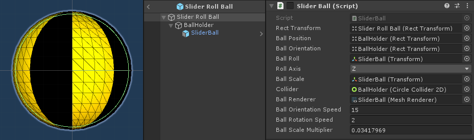
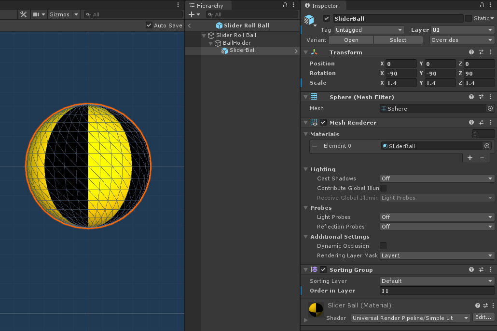
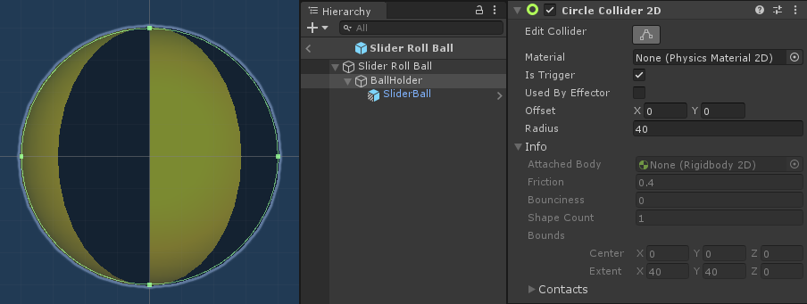
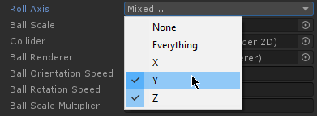

Slider Ball

Sliders feature a ball 3d model rolling through it. When a beatmap is played, only one Slider is "active" at a time, and therefore you only get to see one ball at any given time.
So in reality, there is only one ball instantiated in the Unity scene. It is just reused, being moved from one Slider to another.
3d Model
Different from all the other prefabs, this prefab holds a 3d model. To get it rendered properly in the UI, the layer of this 3D model GameObject is changed to UI, and we added a Sorting Group component to ensure it shows above the sprites and SDF Curves (in terms of z-order).

Collider

Same with Hit Circles, the Slider Ball uses a CircleCollider2D. It doesn't use a SphereCollider because being a 2D game, the three-dimensional aspect of a SphereCollider is useless, despite this showing a 3D model. The simpler CircleCollider2D is more than enough to work for hit detection of the Slider Ball.
Roll Axis
You can change which direction the ball does its rolling on.
Note
This rolling is only a visual effect, the collider does not really do any rolling. In fact the collider doesn't really interact with the physics system since its only job is to be used for hit detection with the mouse cursor and nothing more.

You can choose to make it roll in more than one axis, but if you want to make it roll in a more traditional manner, you may want to ensure only one is toggled.
Which axis to use depends on how the 3D model was oriented upon export from the software it was made on. If you're bringing a custom 3D model to be used as the Slider Ball, it's best to just figure this out by trial-and-error.
You can even choose None to essentially prevent the ball from doing a rolling animation. It would just slide along the curve.
Ball Scale Multiplier
Since Unity UI regards distance units as pixels, there is a vast gap between the unit of measurement in Unity UI's 2D system vs 3D models.
To be able to translate the Osu!pixel values we work with into the Slider Ball 3D model's scale, the Slider Ball component has a property called Ball Scale Multiplier. Depending on the size of your 3d model, this value can be quite small. In our default prefab for example, its value is 0.034117969. This is basically the multiplier needed to get the ball 3d model properly sized on-screen.
Basically, MouseDance will get the value for what the ball should be in, but it's in values that assume a 640x480 screen. A default sized ball for example (with Circle Size setting at 5), has a radius of 32 pixels. So we need a multiplier that brings this value of 32 into a scale value that's appropriate for our 3D model (since we use scale to change our 3D model size).
32*0.034117969=1.091775008→ scale applied on the 3D model =(1.091775008, 1.091775008, 1.091775008)
For the specific ball 3D model that we use, that multiplier happens to be 0.034117969. This is mostly verified by trial and error adjustments. So if you have your own custom 3D model that you want to use, you may need to tweak the Ball Scale Multiplier in your own playtesting.
Note
This ball scale by the way, is for visual purposes only. The CircleCollider2D size (which works directly with Osu!pixel values) stays independent of this scale, so even if the ball looks too small or too big, the hit detection will still work the same.